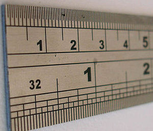
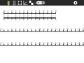
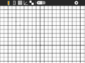
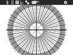
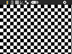

Ruler¶

Where to get Ruler¶
About Ruler¶
Ruler is a simple collection of measurement tools that are displayed on the screen.
 |
 |
 |
 |
CM and MM scales |
CM and MM grid |
Angles |
Checkerboard |
Since the OLPC XO computer has a 200 DPI display, the rulers are quite accurate. One other hardware, where the display resolution is not known, their is a spinner to let the user set the DPI. Ruler saves this value to the Journal, so it need not be set on subsequent uses of the Activity.
Toolbar¶
From left to right:
Activity menu button
CM and MM ruler
CM and MM grid
Angles (protractor)
Checkerboard
Dots per inch (DPI) spinner – used to set the display DPI – only appears when DPI is not known, e.g., non-OLPC-XO hardware
Stop button (not shown)